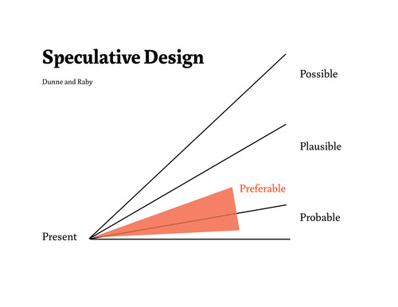
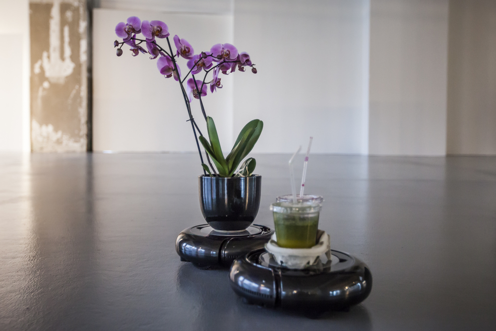
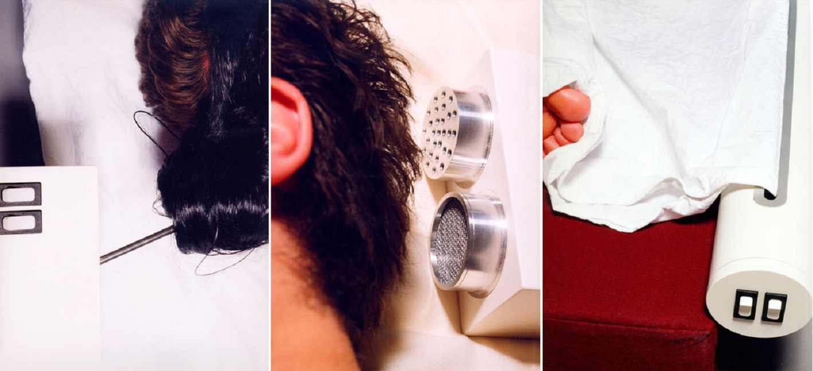
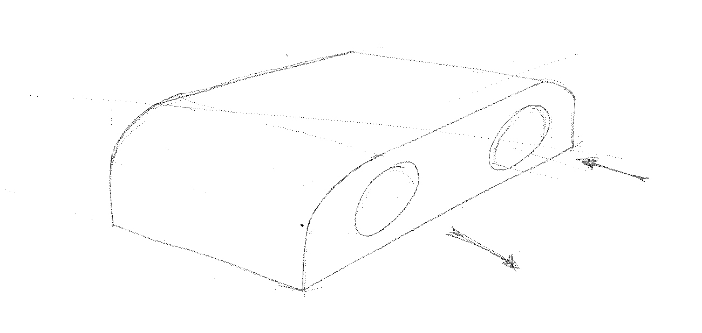
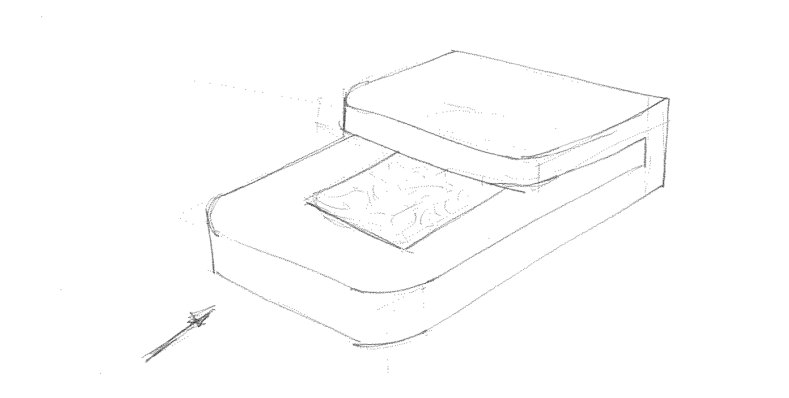

Summary of the week
Drama, breakups, more dramatic drama. All resulted in setting up a brief as as spin-off of NkL. Two very relevant books on the shelf, one working prototype and two ideas for a mini-set of companion robots.
Sherry Turkle-Alone Together
In her book Alone Together, Sherry Turkle writes about the relationship we have with technological devices, companion robots and social media. Extract of the first 4 chapters below.
We are lonely but fearful of intimacy. Digital connection and sociable robots may offer the illusion of companionship without the demand of friendship". I feel something in my stomach when I am not next to my phone and it seems like I am missing a limb when I am in a pub without my laptop stored in my backpack on my back. I would like to investigate further the very meaning of companionship with technological devices and the digital world in general.
The fear of being judged is not present with a robotic companion. The value is in sharing an experience, not much in understanding/reflecting on what the robot is
... and so a dicothomy is constructed: physical vs pshychological
Why does a ball roll down a slope? A kid would say because it wants (WILL), an adult would say because of gravity (SCIENCE)
Furby is kind of real, but just a toy
Kids can attribute two identities (biological and mechanical) at the same time and switch from the first to the second.
If a robot simulates pain, it enables mistreatement
Without alterity there can not be empathy
What are the implication given that we are really shaped by the technical devices that sourround us?
Speculative Design References
I started to read Speculative Everything written by Anthony Dunne and Fiona Raby. According to the writer Bruce Sterling, design fiction is "the deliberate use of diegetic prototypes to suspend disbelief about change". Design fiction aims at triggering debate and conversation about sensitive topics, in my case technology. The futurologist Stuart Candy maps out the future in the schematic below (image credit: http://corcoranfordesign.com).
Dunne & Raby-Technological Dream Series
Dunne and Raby designed a set of robotic companions to trigger debate around how we would like our robots to relate to us in the future. Cool aesthetics.
James Auger-Carnivorous Domestic Entertainment Robot
J.Auger investigates a scenario in which a robot can be self-sustaining from an energy point of view. I find it interesting that the author poses the question: "who is going to feed the robots?"
Addie Wagenknecht-The Internet of Things
Addie Wagenknecht designed a set of roombas that interact with each other and behave differently according to proximity. Interesting step from automation to dynamic behaviour. (image credit: http://www.placesiveneverbeen.com)
Noam Toran-Accessories for Lonely Men
Noam Toran designed a set of devices that could fill the gap left in his life after he had broken up with his girlfriend. Very interesting aesthetics, clear set of rituals that were relevant to him in a couple (image credit: http://noamtoran.com/NT2009/projects/accessories-for-lonely-men)
Prototype of the Caress Machine
The video below shows the first prototype that I built.
. is it necessary? Meaning, do you really feel so lonely that you need a machine to caress your hand?
. the more you stroke it, the more intense it actually caresses you back. Might that lead to excitement or could it go opposite towards frustration?
Two Ideas
I would like to build two robotic machines to further explore this area. The first one would be an evolution of the caress machine and would actually stroke properly.
The second machine would be a blowing machine. In this, I am interested in developing an aesthetic for it.
Jess Tutorial
. Good reading reference of Alone Together, Dunne & Raby also good precedent. Series of devices (Caress Machine) that explore intimacy is a good start.
. Can you define what you mean by intimacy, be more specific, could you make a catalog of gestures and interactions? Intimacy is not just the physical – ie. ELIZA creator’s secretary asking him to leave so she could ask it personal things she didn’t want her boss to know. Can you question the trust in the device, it’s perceived impartiality?
. Think about networked devices (as mediator between people, but also between multiple devices – does the caress machine get jealous if you’ve been spending too much time with the others? Need to develop the interactions into multiple levels of complexity not just switch-call/response.
Other references from Matt and Ruairi:
. future of screens;
. Domestic Ecologies blog article;
Conclusions
The fact that I picked breathing and caressing as interaction modalities is quite arbitrary, nonetheless I will stick to one of these two so that I can start building immediately on Monday. It is true that I need to reflect on what I mean with intimacy and what other gestures can be relevant in this scenario. I want to focus on the aesthetics of these devices and how can they communicate what they are/do. In the future it would indeed be very interesting to look at interconnectivity in between the two objects and in possibly two humans interacting at the same time. The prototype needs a communication protocol with the other prototype.
//next week//
building of prototype1: the breathing machine.